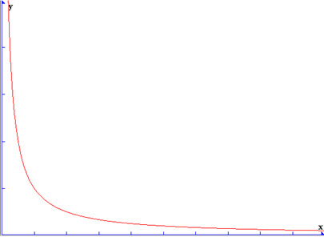

UDN
Search public documentation:
DistanceModelAttenutionCH
English Translation
日本語訳
한국어
Interested in the Unreal Engine?
Visit the Unreal Technology site.
Looking for jobs and company info?
Check out the Epic games site.
Questions about support via UDN?
Contact the UDN Staff
日本語訳
한국어
Interested in the Unreal Engine?
Visit the Unreal Technology site.
Looking for jobs and company info?
Check out the Epic games site.
Questions about support via UDN?
Contact the UDN Staff
距离模型衰减
概述
ATTENUATION_Linear
 使用实例：比较适用于一般不需要严格的 3d 衰减设置的循环环境和低细节背景声音。还适用于交叉衰减的大半径环境声音。
使用实例：比较适用于一般不需要严格的 3d 衰减设置的循环环境和低细节背景声音。还适用于交叉衰减的大半径环境声音。
ATTENUATION_Logarithmic
 使用实例：适用于那些需要更多精确的 3d 定位的声音。同时还适用于在近距离使声音产生“跳动”；也适用于即将发射的导弹和射弹。
使用实例：适用于那些需要更多精确的 3d 定位的声音。同时还适用于在近距离使声音产生“跳动”；也适用于即将发射的导弹和射弹。
ATTENUATION_LogReverse
 使用实例：作为武器或其他声音中的一个图层使用，需要提高这些声音才能放大到它们 MaxRadius 的声音。
使用实例：作为武器或其他声音中的一个图层使用，需要提高这些声音才能放大到它们 MaxRadius 的声音。
ATTENUATION_Inverse

使用实例：适用于那些在 MinRadius 发出的极其微小但是需要从远处才能听到的 3d 声音。ATTENUATION_NaturalSound
 使用实例：适用于射击或者其他兴趣点或高频率内容，对于它们而言，使用对数衰减无法‘准确’地体现声音的衰减情况。
使用实例：适用于射击或者其他兴趣点或高频率内容，对于它们而言，使用对数衰减无法‘准确’地体现声音的衰减情况。
ATTENUATION_Logarithmic 的一些 最小值/最大值 设置示例
 最小值 100/最大值 1000：
最小值 100/最大值 1000：
 最小值 500/最大值 1000：
最小值 500/最大值 1000：
 最小值 900/最大值 1000：
最小值 900/最大值 1000：